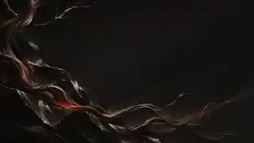
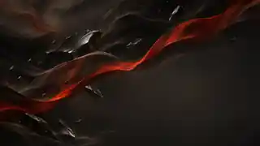
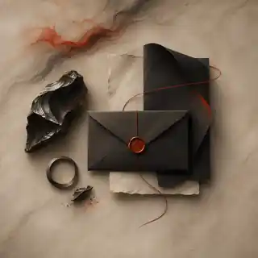
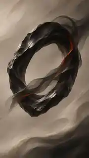
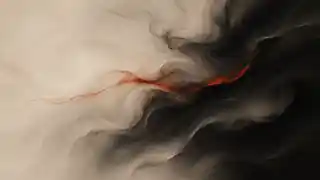

Organic Studies
مطالعات ارگانیک و انتزاعی هادس
Five generated image derivatives, 320px long edge. Not full-resolution masters or print artwork.
پنج تصویر جنریتشده با ضلع بلند ۳۲۰ پیکسل؛ نه فایل اصلی و نه نسخهٔ آمادهٔ چاپ.








